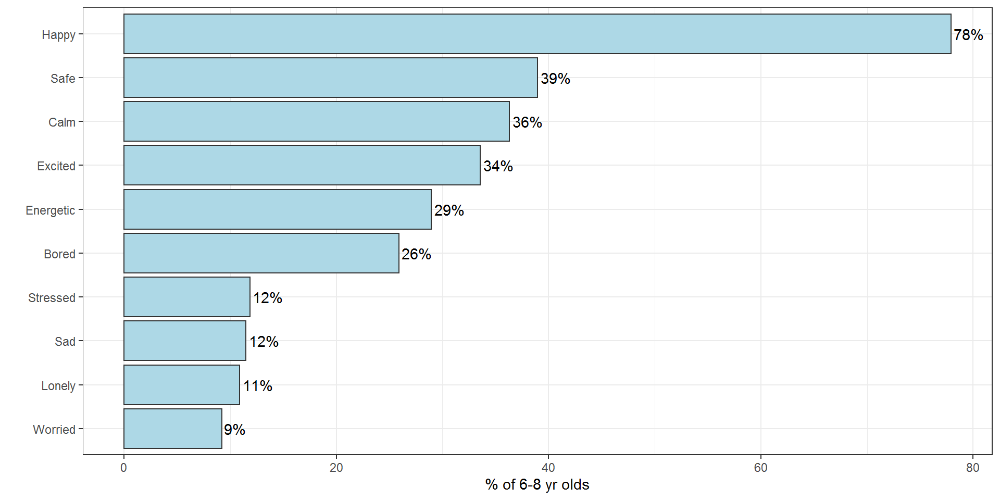
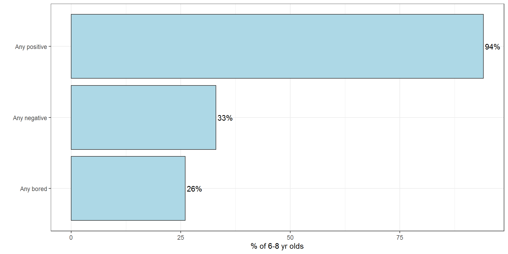
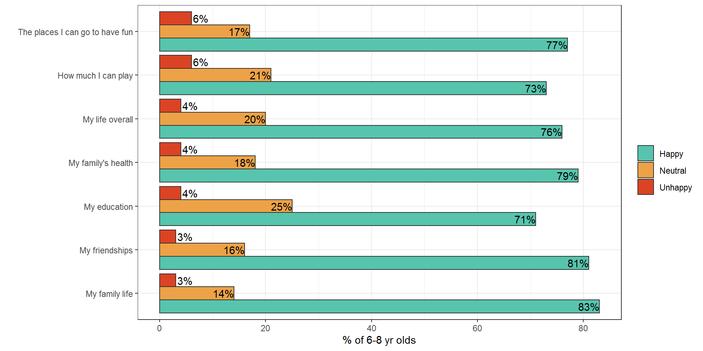
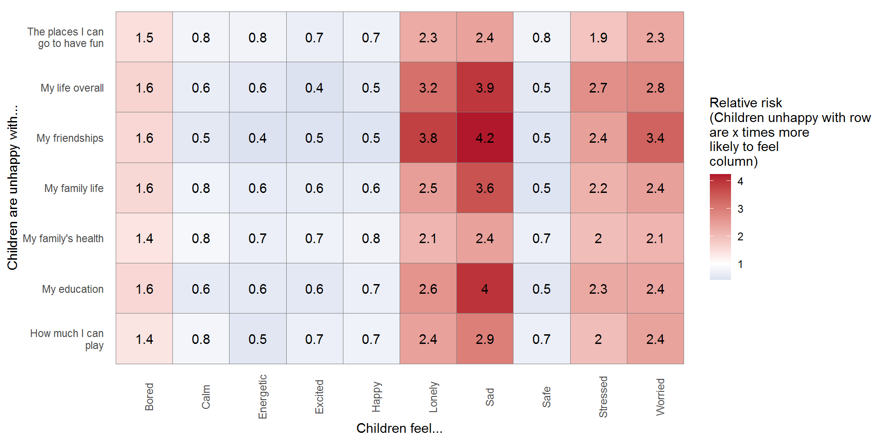
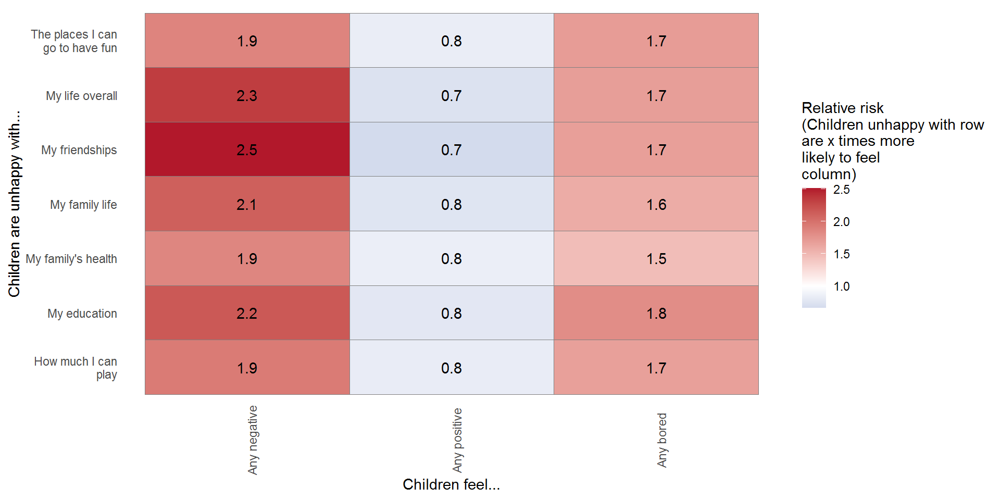

Follow us


We asked children aged 6-8 two questions about how happy they are.
The first question was: “Choose up to three words that describe how you feel most of the time.” The chart below shows the overall results.
The second question was more similar to the question asked of 9-17 year olds. As with the older respondents, children aged 6-8 were asked “How happy are you with these things in your life?”, and were given a list of items to assess with the response options ‘Sad’, ‘Neither happy nor sad’, or ‘Happy’. The list of items for 6 to 8’s was:
In the chart for this question, the red bars show the proportion of children who said they were sad, while the green bars show the proportion of children who said they were happy. The amber bars show the proportion of children who were neutral – neither happy nor sad.
Note children can select more than one option


Correlations between how children describe their life and what they are unhappy with
Note: red = stronger positive correlation (i.e. children selecting row are more likely to also select column in the chart below), blue = stronger negative correlation

Correlations between how children describe their life and what they are unhappy with
Note: red = stronger positive correlation (i.e. children selecting row are more likely to also select column in the chart below), blue = stronger negative correlation
